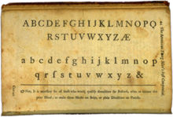

|
|
How to Read 18th Century British-American Writing | |||
|
|
||||
|
18th Century Reading and Writing Historians soon learn not to
assume that people in the past thought about and experienced life in the
same ways that we do today. Something as basic to us as writing was quite
different in 18th Century British-America. British-Americans
in that century spoke English, yet they used words that we do not, and
we use words that did not even exist then. 18th Century pronunciation
differed from ours, and many of the rules of spoken and written usage
differed as well. |
||||
|
In Martha Ballard’s time, not everyone could read fluently, and even fewer people could write. Literacy estimates vary, but it is thought that almost all of the adult New England population at the end of the eighteenth century could read at least to some degree. Maybe half of those could write. The ability to read the printed word did not necessarily result in the ability to read handwriting. Likewise, the ability to write one’s name or copy phrases in one "hand" or style did not necessarily mean that the same person could compose original prose. Reading and writing were taught separately, as separate skills. The amount and type of one’s reading or writing skills depended on class, occupation, and gender. In British colonial America, reading was taught so that both males and females could read the Christian Bible. It was thought that women especially, did not need to express their own thoughts as much as they needed to be able to read the Christian Word. Males progressed in school and learned to read in order to carry on business or professional occupations. Some, but by no means all, of the upper classes became literate as a sign of good breeding and education. Typically, fewer women than men could read. Writing in colonial America was also a predominantly male skill, tied strongly to occupation and class. Lawyers and their clerks, scholars, physicians, clergy, and business people needed to be able to write. It was felt that most women did not need to know how to write, nor did farmers, artisans, non-whites, and the lower classes. Most Black slaves were kept illiterate as a means of social control. Martha Ballard’s lifetime straddled the colonial and early national
periods of United States history. Her schooling as a girl began before
the American Revolution. After the American Revolution, the idea of Republican
Motherhood invited more schooling for females. It was argued that women
would be the mothers and first teachers of the republic’s future
(male) citizens, so females needed to be well-educated. How could they
teach what they didn’t know? As a writing female who kept a diary,
Martha Ballard was unusual for her time. She would have been less unusual
in the next century when diary keeping became a fashionable female avocation. Penmanship instruction in the eighteenth century consisted of copying
different "hands," which were different calligraphic styles.
Penmanship books showed alphabets, sayings, and business forms in different
hands. Students copied these exactly, for practice and reference. Writing
practice for females was not based on commerce but on accepted female
skills. Thus girls learned to stitch alphabets and maxims onto samplers
while boys practiced on slates and paper. Many samplers survive today. |
Handwriting Samples from The American Young Man's Best Companion | |||
|
"An easy Copy
for Round Hand" |
||||
|
"The Italian Hand" |
||||
|
"Flourishing Alphabet" |
||||
|
"German Hand" |
||||
|

|
||||
|
Different hands were considered proper and appropriate according to style, class, gender, and occupation. For example, 18th century females used the Italiante hand, which was considered easier to learn and more feminine in appearance. Men in commerce were expected to use a hand that inspired confidence and demonstrated self-assurance. By contrast, the earlier arcane, very difficult to read Court Hands of England were not favored in the more democratic early national period of the United States. Materials were unlike today’s. Martha Ballard folded and cut individual sheets of paper for her diary. Writers had to make and sharpen their own quills. Ink could be made according to recipes or mixed from dried ink powder that could be purchased. By looking at 18th century writing, studying who wrote what, and reading 18th century penmanship books, one can develop a "feel" for the era and learn to read period manuscripts. Unfamiliar writing styles, quirks of individual writers who do not follow standard writing patterns, and problems with the materials such as ink blotches, fading ink, and discolored paper can pose intriguing reading challenges. Here are some characteristics of 18th century British-American handwriting that might make for difficult reading until you get used to it.
Steps in Deciphering Handwritten Documents
|
||||
|
Excerpts from The American Young Man’s Best Companion
|
||||
|